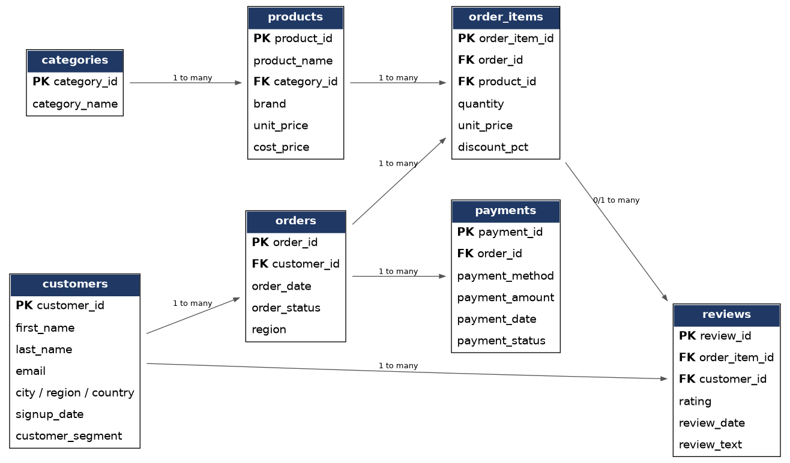
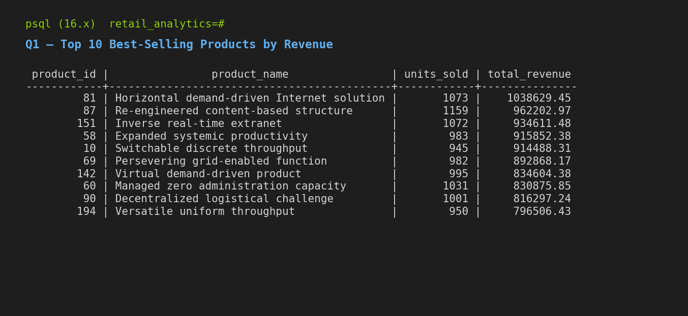
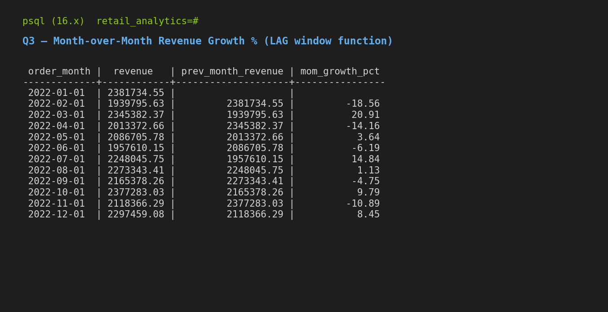
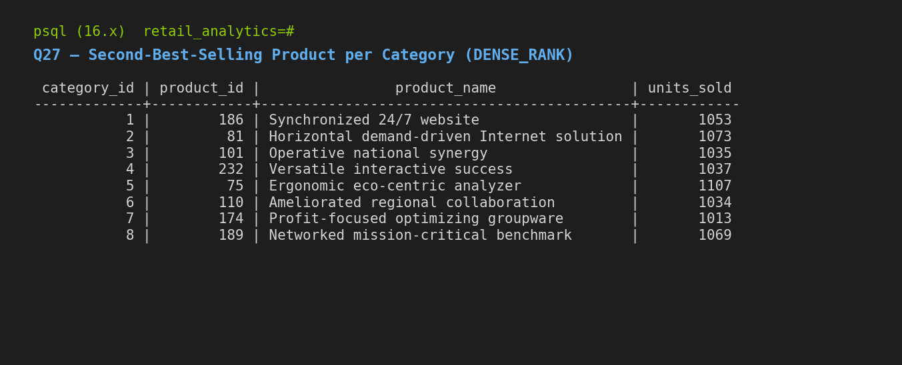

The goal
Most SQL on a resume stops at SELECT and GROUP BY. I wanted a project where a reviewer can read the SQL itself: how raw data gets cleaned, how the schema is designed, and how real business questions get answered with window functions, CTEs, and different join types.
About the data. The dataset is synthetic. I generated it with a Python script (Faker) and injected realistic data-quality problems on purpose, so the cleaning code has real work to do. It is not a real company's data, so the numbers describe this project, not a real business.
The data
The raw files arrive messy, like exports from several source systems. After cleaning, the database holds seven related tables.
| Table | Raw rows | Clean rows |
|---|---|---|
| customers | 4,080 | 4,000 |
| products | 252 | 250 |
| orders | 22,220 | 21,933 |
| order_items | 65,860 | 64,699 |
| payments | 21,966 | 21,689 |
| reviews | 27,474 | 27,116 |
Cleaning: what was wrong and how I fixed it
| Problem | Where | Fix |
|---|---|---|
| Duplicate rows | every table | ROW_NUMBER() per ID, keep the first |
| Inconsistent casing | email, order status | LOWER(TRIM(...)) |
| Blank strings instead of NULL | email, city, order date | NULLIF(TRIM(x), '') |
| Negative prices and quantities | products, order items | ABS(), documented as an assumption |
| Missing required date | orders | rows dropped (no safe default exists) |
| Ratings outside 1 to 5 | reviews | rows dropped as unrecoverable |
| Orphaned foreign keys | order items, payments, reviews | filtered with EXISTS checks |
Two of these were judgment calls, and I wrote them into the code comments so a reviewer can challenge them. Treating a negative price as a sign error assumes the size of the number is right. Dropping orders with no date is safer than inventing one.
One bug taught me something. My first load failed completely: order_items.unit_price is copied from the products table, so it inherited the same negative-price errors, and PostgreSQL aborts an entire INSERT on the first constraint violation. Nothing loaded. The fix was to apply the same rule in both tables and to load parent tables before child tables.
Design
The pipeline has two layers. Staging tables hold the raw CSVs as plain text with no constraints. The clean schema has typed columns, primary and foreign keys, CHECK constraints, and indexes on the columns the queries join and filter on. A single script builds the schema, loads the files, and runs the cleaning.

order_items is the central fact table linking orders to products.The 30 queries
Every query was run against the live database. They are grouped by theme.
- Revenue and sales (Q1 to Q10): top products, monthly revenue, month-over-month growth with
LAG(), running total, 3-month rolling average, revenue by region, category share of revenue, average order value by segment, products declining quarter over quarter, and profit-margin tiers withCASE WHEN. - Customer analytics (Q11 to Q20): top customers with
RANK(), customers who never ordered (LEFT JOIN), aFULL JOINdiagnostic, products never ordered (RIGHT JOIN),ROW_NUMBER/RANK/DENSE_RANKside by side, new vs. returning customers, cohort retention, churn flagging, days to a repeat purchase withLEAD(), and above-average spenders with a subquery. - Operations and quality (Q21 to Q30): order-status mix, return rate by category with
HAVING, bestsellers with no reviews, average rating per product, payment failure rate, payment-vs-order reconciliation, second-best seller per category withDENSE_RANK(), days since last order, and an executive summary that combines most of the techniques in one multi-CTE query.

INNER JOIN, GROUP BY). Real output from the database.
LAG()).
DENSE_RANK()), a classic interview question.Limits and next steps
- The data is synthetic, so the business results show the method and not a real market.
- I added indexes for the common joins and date filters, but I haven't tuned the heavier queries (cohorts, rolling averages) with
EXPLAIN ANALYZE. That is the next step. - The cleaning rules live in one script. Turning them into automated tests would make future changes safer.